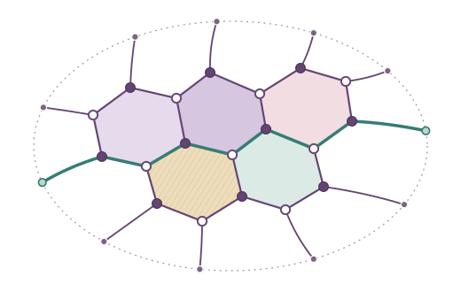

Cornell University / Mathematics
Arker Oke Soe
My research interests lie in extremal graph theory, additive combinatorics, and algebraic combinatorics.
B.A. candidate in Mathematics, expected May 2027.
My major supervisor is Professor Karola Mészáros.

A trip through a plabic graph
Follow the teal path from left to right. At each filled vertex it turns right, and at each open vertex it turns left.
Publications
-
In preparation
Asymptotic Independence of Solution-Free Constraints over Finite Fields.
Talks
-
Extremal Graph Theory and the Zarankiewicz Problem.
Cornell University Mathematics Club (invited talk).
-
Deck Reconstruction for Restricted Word Classes.
Georgia Institute of Technology, Mathematics REU end-of-program talk.
When is a four-cycle forced?
Join each of the Fano plane’s seven points to the three lines through it. Every pair of points shares exactly one line, so the 21 edges avoid a four-cycle. A 22nd edge would force one.
Point 1 of 7
Selected Awards & Grants
- Resolution Project: Social Venture Challenge Grant$10,000
- Cornell University: Summer Experience Grant$4,000
- Columbia University: GROW Conference Grant$500
- Cornell University: Summer Experience Grant$3,800
- Columbia University: GROW Conference Grant$500